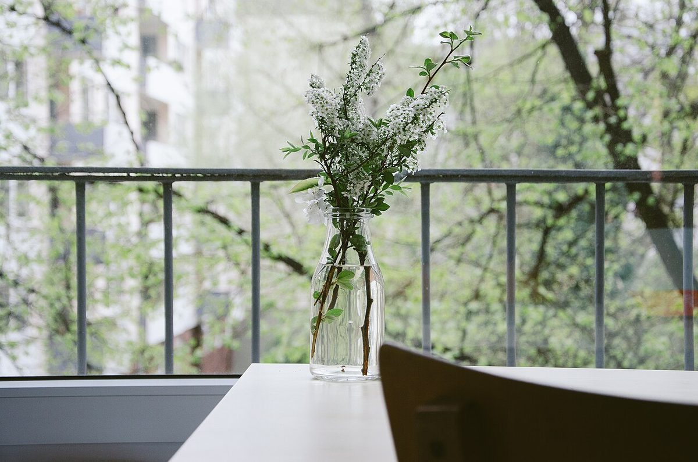
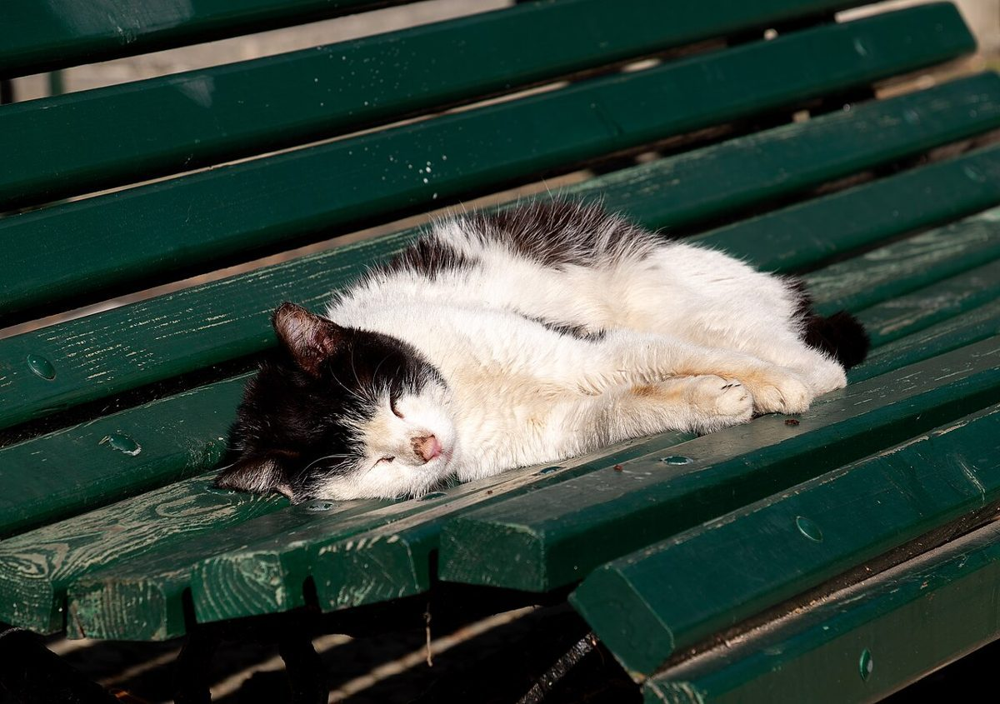

店のこと
店のこと
確認できているのは、所在地とInstagramのアカウントだけ。ほかはまだ、白紙のメモ帳です。
このページの「想像してみる」部分は、制作側が想像して書いたものです。お店の実際の様子・考え・メニューとは関係がありません。
確認できていること
- 店名は「メム」、業種はカフェ
- 所在地は愛知県常滑市栄町7丁目31(〒479-0836)
- 電話番号はなし。連絡はInstagramから
- 営業時間・定休日・メニュー・価格・ご予約・駐車場は準備中
想像してみる(制作側の連想)
制作側の連想で、お店の理念・由来とは無関係です。店名の由来は分かりません。 「メム」という二文字の響きから、短く書きとめるメモを思い浮かべました。そこで各ページを、罫線のあるメモ用紙のようにしています。
メモ欄(イメージ)
余白に貼る写真。



